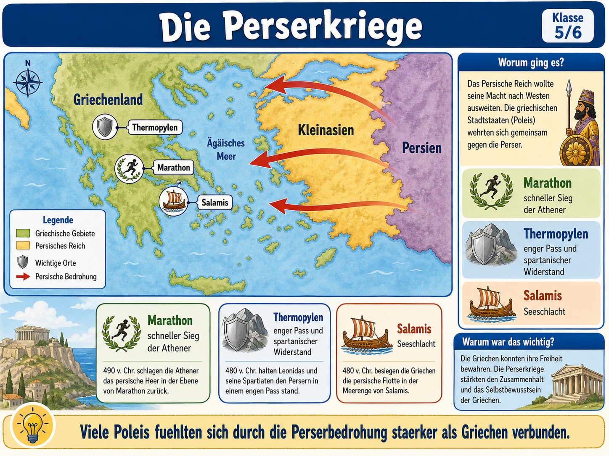

Du lernst die Perserkriege als zusammenhaengende historische Erzaehlung:
Warum griff das Perserreich griechische Poleis an, was geschah bei Marathon,
Thermopylen und Salamis, und warum wurde daraus ein wichtiges Thema fuer das
Selbstverstaendnis vieler Griechen?

Die Grafik ist unser roter Faden: oben die Ausgangslage, in der Mitte die Karte, unten die drei Schluesselereignisse und rechts die historische Bedeutung.
Der Gedanke hinter dem Modul
Die Perserkriege lassen sich leicht als Heldengeschichte missverstehen.
Fuer Geschichte ist aber wichtiger: Wer handelt? Warum entsteht der Konflikt?
Welche Entscheidungen werden getroffen? Und wie deuten Menschen das Ereignis spaeter?
1. Ausgangslage
Das Perserreich war ein grosses Reich. Die Griechen lebten dagegen in vielen einzelnen Poleis.
2. Konflikt
Persische Herrschaftsansprueche trafen auf griechische Unabhaengigkeit und Buendnisse.
3. Schauplaetze
Marathon, Thermopylen und Salamis zeigen unterschiedliche Situationen: Landkampf, Engpass, Seeschlacht.
4. Bedeutung
Der Sieg wurde spaeter als Zeichen gemeinsamer griechischer Identitaet erinnert.
Die Grafik richtig lesen
Die Grafik funktioniert wie eine historische Erklaerkarte. Lies sie nicht nur als Landkarte,
sondern als Abfolge von Fragen: Wer bedroht wen? Welche Ereignisse werden ausgewaehlt?
Und welche Bedeutung bekommt das Ganze am Ende?
1. Worum ging es?
Das Persische Reich wollte seine Macht nach Westen ausweiten. Viele Poleis verteidigten ihre Freiheit.
2. Was zeigen die Pfeile?
Die roten Pfeile stehen fuer persische Bedrohung und Angriffe aus Richtung Kleinasien/Persien.
3. Welche Beispiele merkt man sich?
Marathon, Thermopylen und Salamis zeigen drei unterschiedliche Situationen: Sieg, Widerstand, Seeschlacht.
4. Warum war das wichtig?
Viele Poleis fuehlten sich durch die gemeinsame Bedrohung staerker als Griechen verbunden.
Basiswissen: Worum ging es?
Im 5. Jahrhundert v. Chr. dehnte sich das Perserreich weit aus. An der Kueste Kleinasiens lebten
auch griechisch gepraegte Staedte. Als dort Konflikte mit persischer Herrschaft entstanden, wurden
einige griechische Poleis hineingezogen. Persische Koenige wollten ihre Macht sichern und Gegner bestrafen.
Die Griechen waren nicht "ein Staat". Athen, Sparta und viele andere Poleis hatten eigene Regeln,
Interessen und Rivalitaeten. Genau deshalb ist die gemeinsame Abwehr bemerkenswert: Aus vielen
getrennten Poleis entstand zeitweise ein gemeinsames Handeln gegen eine aeussere Bedrohung.
Perserreich
Grossreich mit Koenig, Verwaltung, Heer und vielen unterworfenen Regionen.
Polis
Griechischer Stadtstaat mit Stadt, Umland, eigenen Regeln und eigener Identitaet.
Buendnis
Mehrere Poleis arbeiten zusammen, obwohl sie sonst oft eigene Interessen verfolgen.
Deutung
Menschen erklaeren spaeter, warum ein Ereignis fuer sie wichtig wurde.
Chronologie interaktiv
Klicke die Stationen an. So entsteht aus einzelnen Namen eine verstaendliche Abfolge.
Die drei grossen Lernorte
Marathon
Athenische Truppen besiegten 490 v. Chr. ein persisches Heer. Wichtig ist nicht nur der Sieg, sondern dass Athen dadurch Selbstvertrauen gewann.
Thermopylen
Ein enger Pass wurde 480 v. Chr. verteidigt. Die Griechen verloren dort, aber der Widerstand wurde spaeter stark erinnert.
Salamis
In der Seeschlacht bei Salamis konnten griechische Schiffe die persische Flotte schlagen. Das war fuer den weiteren Verlauf entscheidend.
Pruefungswissen: Ursache - Verlauf - Folge
Ursache
Persische Machtpolitik, Konflikte in Kleinasien und die Unterstuetzung einzelner griechischer Poleis fuehrten zur Eskalation.
Verlauf
Die Perser griffen mehrfach an. Die Griechen reagierten mit wechselnden Buendnissen, Landkaempfen und Seestrategien.
Folge
Viele Griechen erinnerten die Abwehr als gemeinsamen Erfolg. Athen gewann besonders durch seine Flotte an Bedeutung.
Training A: Bildaussagen verstehen
Ordne Aussagen aus der Grafik historisch richtig ein. Es geht nicht um Kartenorte, sondern um Aussage und Bedeutung.
Training B: Ursache - Ereignis - Folge - Deutung
Sortiere historische Aussagen nach ihrer Funktion. Genau das braucht man in Klassenarbeiten.
Training C: Mini-Antwort bauen
Waehle die beste Begruendung. Das trainiert ganze Antwortsaetze statt einzelne Stichworte.
Geschichts-Test
10 historische Pruefungsfragen: Ursachen, Ereignisse, Folgen, Deutung und Grafikverstaendnis.